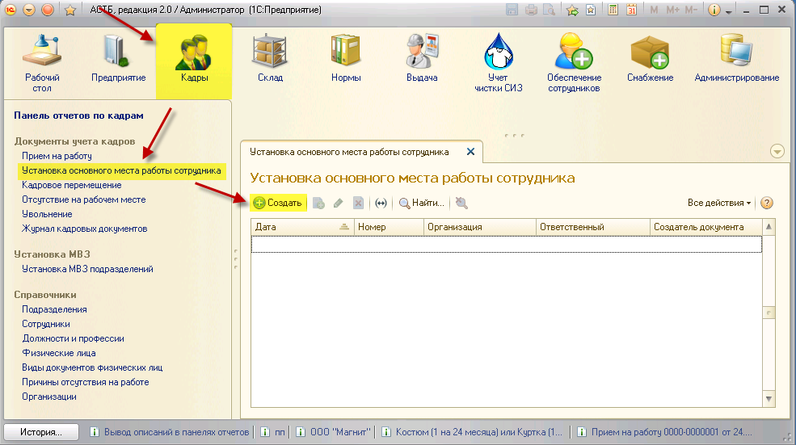
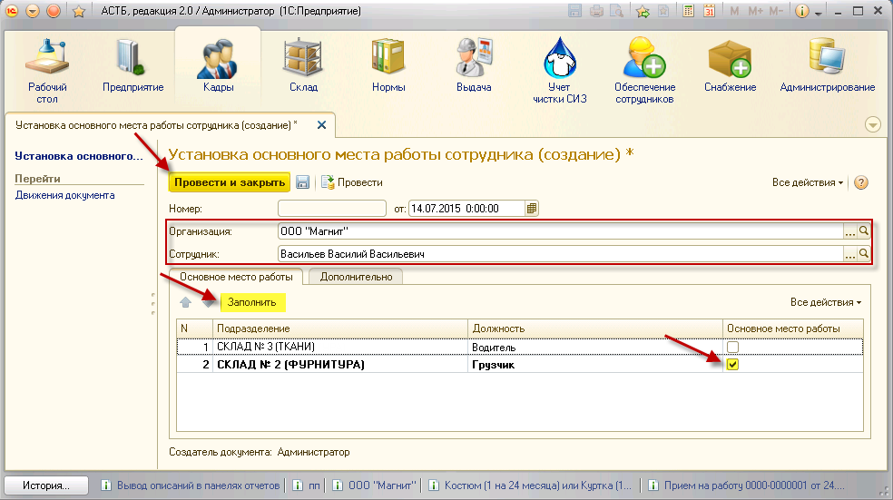

В ПК АСТБ 2.0 существует возможность установки основного места работы для сотрудника, принятого на работу на несколько должностей. Для этого зайдите в раздел «Кадры», документ «Установка основного места работы сотрудника», и в открывшемся окне нажмите кнопку «Создать».

В открывшемся окне выберите организацию и сотрудника. Во вкладке «Основное место работы» нажмите кнопку «Заполнить», после чего в таблице появятся записи по занимаемым сотрудником должностям. Проставьте флажок напротив строки с основным местом работы и нажмите кнопку «Провести и закрыть».

Примечание: после установки основного рабочего места сотрудник будет прикреплен к тому МВЗ, которое обслуживает подразделение его основной занятости.